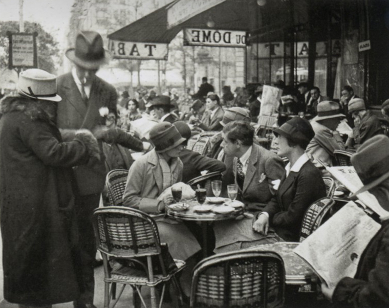

Café du Dôme
W latach dwudziestych wieku dwudziestego Rilke odwiedził Paryż dwukrotnie — w roku 1920 i 1925. Szczególnie podczas ostatniej wizyty odczuwał wręcz gorączkowe pragnienie kontaktu z drugim człowiekiem. Poeta uchwycił się myśli o Paryżu niczym talizmanu, wierząc, że jego magiczna siła raz jeszcze okaże się dlań dobroczynna.
Paryż, Café du Dôme, rok 1925, fot. André Kertész